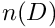
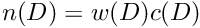
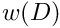
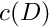
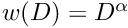
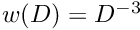
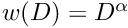
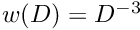

Input File Format: Aerosol Weighting Function
Read an aero_weight from a spec file.
- Parameters
-
[in,out] file Spec file. [in,out] aero_weight Aerosol weight.
For efficiency the aerosol population can be weighted so that the true number distribution  is given by

where  is a fixed weighting function,  is the computational (simulated) number distribution, and  is the diameter. Thus a large value of means that relatively few computational particles are used at diameter , while a small value of means that relatively many computational particles will be used at that diameter.
is the diameter. Thus a large value of means that relatively few computational particles are used at diameter , while a small value of means that relatively many computational particles will be used at that diameter.
The aerosol weighting function is specified by the parameters:
- weight (string): the type of weighting function — must be one of: "none" for no weighting (
 ); "power" for a power-law weighting ( ), or "mfa" for the mass flow algorithm weighting (  with dependent coagulation particle removal)
); "power" for a power-law weighting ( ), or "mfa" for the mass flow algorithm weighting (  with dependent coagulation particle removal) - if the
weightispowerthen the next parameter is:- exponent (real, dimensionless): the exponent
 in the power law relationship — setting the
in the power law relationship — setting the exponentto 0 is equivalent to no weighting, while setting the exponent negative uses more computational particles at larger diameters and setting the exponent positive uses more computational particles at smaller diameters; in practice exponents between 0 and -3 are most useful
- exponent (real, dimensionless): the exponent
See also:
- Input File Format: Spec File Format — the input file text format